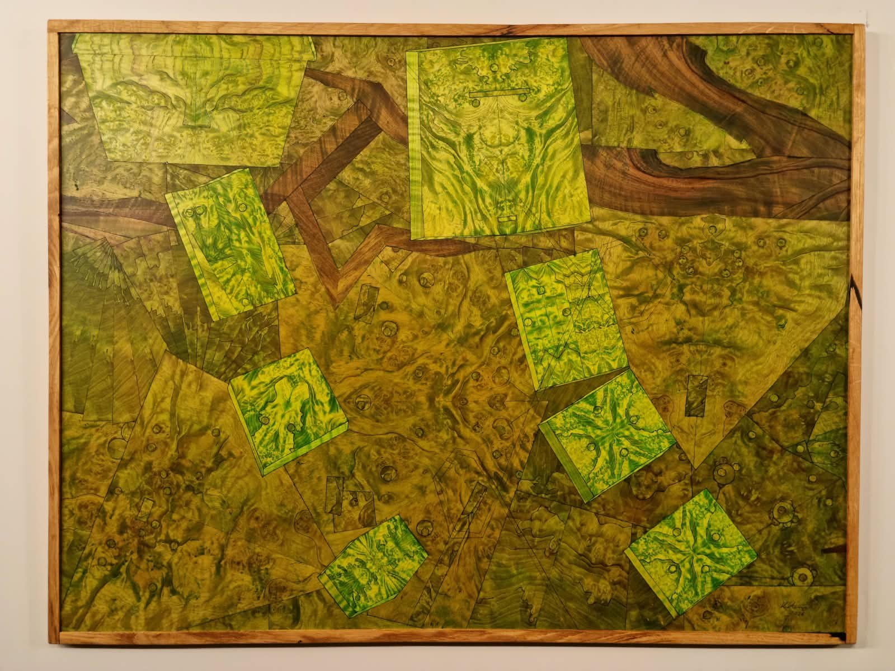

Cykl Now feat. Addiction
Sight
- Technika
- Intarsja, fornir orzechowy, kasztanowy i jesionowy na sklejce, barwiony ręcznie, w ramie
- Wymiary
- 64 × 84 cm (wys. × szer.), z ramą
- Rok
- 2026
- Egzemplarz
- Unikat
750 £
Na terenie Wielkiej Brytanii dostarczam osobiście, a za granicę pakuję dzieło w skrzynię i wysyłam po wcześniejszej wycenie. Do każdej pracy dołączam podpisany certyfikat autentyczności. Płatność można rozłożyć na dwie albo trzy części bez żadnej dopłaty, wystarczy o to poprosić.
Pełne zasady, w tym prawo do zmiany zdania w ciągu czternastu dni, znajdziesz na stronie zakup, dostawa i zwroty.
O tym dziele
W tym cyklu zieleń to bycie obecnym. To warstwy drobnych rzeczy w ciągu dnia, które znikają, jeśli przestaniesz zwracać na nie uwagę. Brąz to uzależnienie, które wcina się w zieleń ostrymi krawędziami, a tych nie da się nie zauważyć.
W każdej pracy z tego cyklu jest sęk i oznacza węzeł gordyjski, bo zobaczyć problem wyraźnie to nie to samo, co go rozwiązać, a czasem jedynym wyjściem jest go przeciąć.
List z pracowni
Nowe prace, zanim trafią do publicznej wiadomości
Kilka razy w roku wysyłam nowe prace, zanim zobaczy je ktokolwiek inny, a przy okazji terminy wystaw i od czasu do czasu notatkę znad stołu warsztatowego. Częściej się nie odzywam, a wypisać się możesz w każdej chwili.